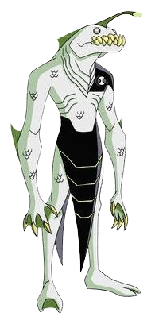

Aquático é um alien peixe, parecido com uma criatura abissal, possui forma humanóide e dentes devastadores. Quando está na água suas pernas se fundem virando uma cauda.
Sendo extremamente rápido dentro da água, também tem uma visão e olfato adaptados às profundezas. Seus dentes são capazes de dilacerar metal e rochas.
Espécie: Piscciss Volann
Planeta de Origem: Piscciss
Curiosidade:
Pode deslocar temporareamente sua mandíbula para mordidas mais poderosas.
